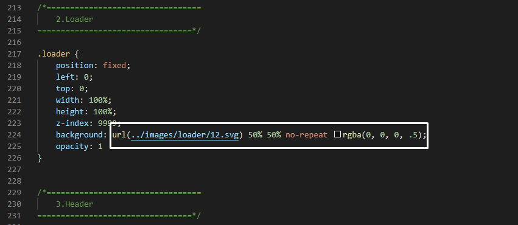

AdminPopular : Bootstrap 5 Responsive Admin Sidebar [1.0.4]
“AdminPopular”
Author: CodePopular
Created:5-12-2020
Updated:20-01-2022
By: CodePopular
First of all, Thank you so much for purchasing this template and for being my loyal customer. You are awesome!
You are entitled to get free lifetime updates to this product + exceptional support from the author directly.
This documentation is to help you regarding each step of customization. Please go through the documentation carefully to understand how this template is made and how to edit this properly. Basic HTML and CSS knowledge is required to customize this template. You may learn basics here and here.
Table of Contents
- Chagne Loading
- Chagne Color
- Change Title and favicon
- Change fonts
- Change logo
- Change Navigation
- Helper Class
- Button Style
- Progressbar class
- Sources and Credits
- Support
A)To change loading icon flow the screenshot - top

B) How to change theme color - top
C) Change title and favicon - top
Step 1:
To change title and favicon just open the html file and you can change it from below selected area.
D) How to change fonts - top
to change fonts style go to assets/css/deshboard.css file then follow the screenshot
E) How to change logo - top
to change logo go to index.html file then follow the screenshot
F) How to change navigation - top
to change navigation sidebar menu go to index.html file you can search [sidebar menu start] then follow the screenshot
G) helper class to change admin style - top
| .mt-5 |
Margin 5px from top |
| .mt-10 |
Margin 10px from top |
| .mt-15 |
Margin 15px from top |
| .mt-20 |
Margin 20px from top |
| .mt-40 |
Margin 40px from top |
| .mb-5 |
Margin 5px from bottom |
| .mb-10 |
Margin 10px from bottom |
| .mb-15 |
Margin 15px from bottom |
| .mb-20 |
Margin 20px from bottom |
| .font-size-10 |
Font size 10 px |
| .font-size-11 |
Font size 11 px |
| .font-size-12 |
Font size 12 px |
| .font-size-13 |
Font size 13 px |
| .font-size-14 |
Font size 14 px |
| .font-size-15 |
Font size 15 px |
| .font-size-16 |
Font size 16 px |
| .font-size-17 |
Font size 17 px |
| .font-size-18 |
Font size 18 px |
| .font-size-19 |
Font size 19 px |
| .font-size-20 |
Font size 20 px |
| .font-size-21 |
Font size 21 px |
| .font-size-22 |
Font size 22 px |
| .font-size-23 |
Font size 23 px |
| .font-size-24 |
Font size 24 px |
to change button style please follow the screenshot
I) How to change progressbar Style - top
| .progress-bar-default |
Make default progressbar |
| .progress-bar-primary |
Make primary progressbar |
| .progress-bar-success |
Make success progressbar |
| .progress-bar-info |
Make info progressbar |
| .progress-bar-warning |
Make warning progressbar |
| .progress-bar-danger |
Make danger progressbar |
J) Sources and Credits - top
Included Stylesheets:
- dashboard.css - Primary Stylesheet
- font-awesome.min.css - Fontawesome icons
- bootstrap.min.css - Bootstrap framework
- themify-icons.css - Themify icons
- simple-line-icons.min.css - Simple line icon
- scrollbar.css - Scrollbar
- sweetalert.min.css - sweetalert
- fullcalendar.min.css - Full Calendar
- fullcalendar.print.min.css - Full Calendar
- calendar.style.css - Full Calendar
- jquery.minicolors.css - Jquery minicolors
- daterangepicker.css - Date range picker
- dropzone.css - Dropzone
- jquery.steps.css - Step wizard form
- jquery-jvectormap-2.0.2.css - Vector map
- select2.min.css - Select2 dropdown
- summernote.min.css - Summernote text editor
Included Javascript:
- admin.js - Primary Javascript
- jquery.min.js - Javascript library
- popper.min.js - Bootstrap proper Javascript
- bootstrap.min.js - Bootstrap framework Javascript
- scrollbar.min.js - Scrollbar
- waypoints.min.js - counterup Javascript
- jquery.counterup.min.js - counterup Javascript
- chart.js - Chart Javascript
- sweetalert.min.js - sweetalert Javascript
- toggles.min.js - Jquery toggle
- sweet-alert-data.js - sweetalert data Javascript
- jquery-ui.min.js - jquery-ui
- moment.min.js - moment Javascript
- fullcalendar.js - Full Calendar
- jquery.minicolors.min.js - Jquey minicolors
- jquery.dataTables.min.js - Datatable Javascript
- daterangepicker.js - Datarange picker Javascript
- dropzone.js - Dropzone Javascript
- bootstrap-input-spinner.js - Bootstrap input spinner
- jquery.steps.min.js - Step wizard form
- gmaps.min.js - Google map
- jquery-jvectormap-2.0.2.min.js - Vector map Javascript
- select2.full.min.js - Select 2 Dropdown Javascript
- summernote-lite.min.js - Summernote text editor
- tnymc.min.js - Tnymc text editor
- validation-data.js - Jquery validation
K) Support - top
If you need help, please feel free to contact us! All issues, requests and questions can be discussed and answered at our Support Team.
Go To Table of Contents